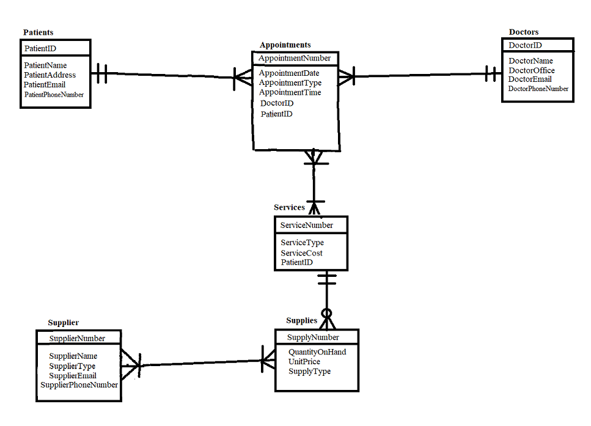
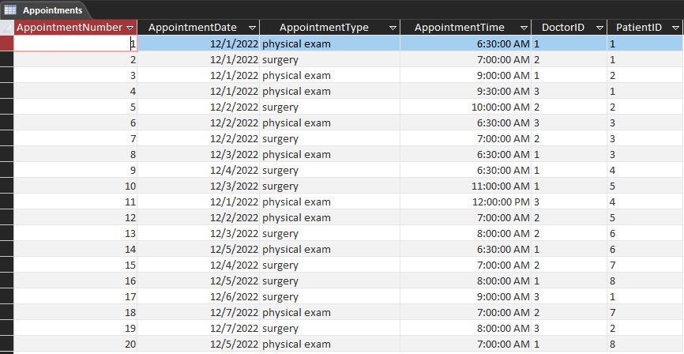
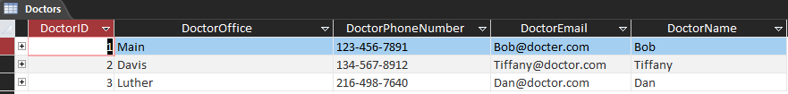
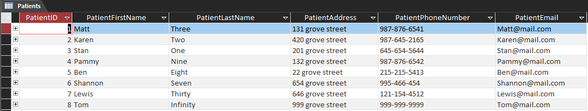
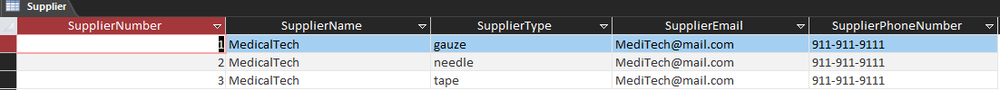
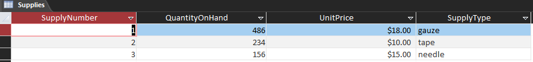

Project Overview
This project creates a relational database for a cinical setting. It is built in Mircrosoft Access and includes a GUI for patient management.
Download the Project Here
Section 1: Project Setup
We begin by creating a diagram of the database structure to visualize the relationships between tables.

Section 2: Database Appointments
In this section you can see a sample of an appointment table within a database.

Section 3: Database Doctors
In this section you can see a sample of a doctor table within a database.

Section 4: Database Patients
In this section you can see a sample of a patient table within a database.

Section 5: Database Supplier
In this section you can see a sample of a supplier table within a database.

Section 6: Database Supplies
In this section you can see a sample of a supplies table within a database.

Section 7: Patient IDs Query
In SQL you can query tables to retrieve specific data. In this section you can see a query that retrieves all patient IDs from the appointments table.
SELECT Appointments.PatientID
FROM Appointments
ORDER BY Appointments.PatientID;Section 8: Appointment Types Query
In this example, a query may be used in a SQL database to retrieve all appointment types from the appointments table.
SELECT Appointments.AppointmentType
FROM Appointments
ORDER BY Appointments.AppointmentType;Section 9: Today's Appointment Types Query
A query can also be used to retrieve all appointments for today from the appointments table.
SELECT Appointments.AppointmentDate, Appointments.AppointmentNumber, Appointments.PatientID
FROM Appointments
WHERE Appointments.AppointmentDate = [Enter Today's Date in 00/00/0000 Format];Section 10: Appointments by Doctor Query
A query can also be used to retrieve all appointments by doctor from the appointments table.
SELECT Appointments.DoctorID, Appointments.AppointmentDate, Appointments.PatientID, Appointments.AppointmentTime, AppointmentType
FROM Appointments
ORDER BY Appointments.DoctorID;Section 11: Supplier List Query
And retrieve all suppliers from the supplier table.
SELECT Supplier.SupplierType, Supplier.SupplierName
FROM Supplier
ORDER BY Supplier.SupplierName;